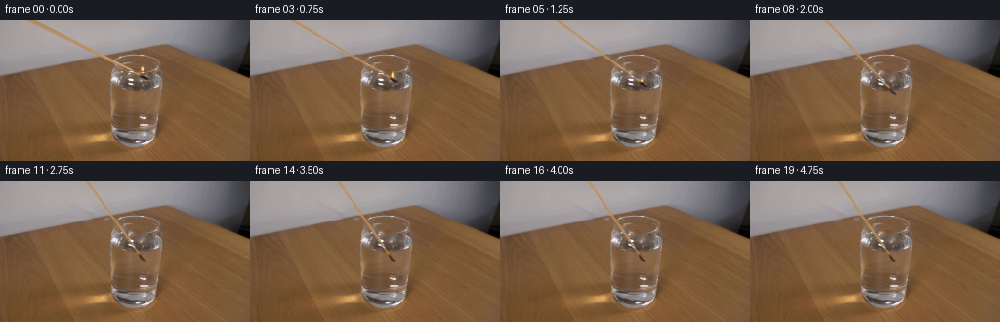
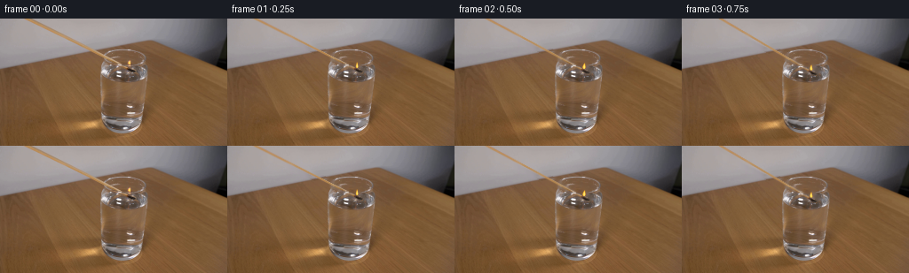
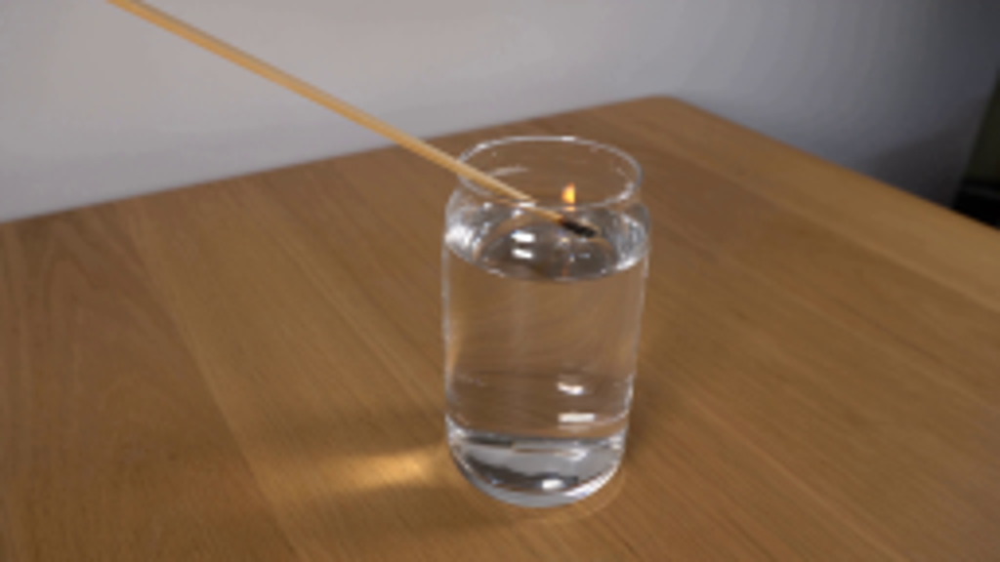
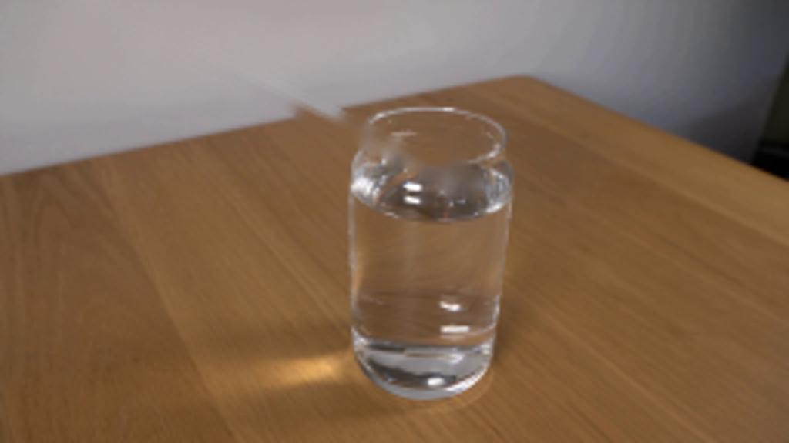
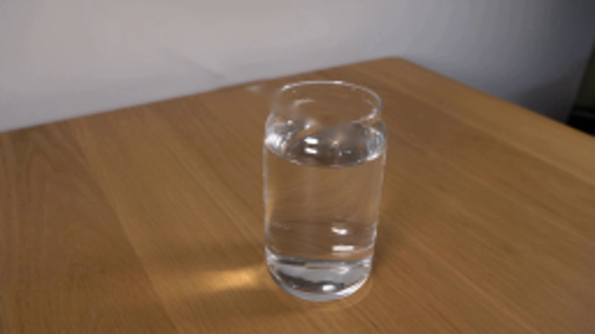
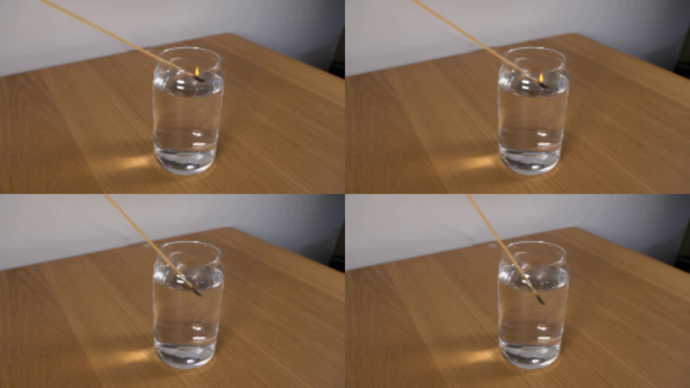

CODING AGENTS AS PIXEL WORLD MODELS
traex/GPT-6.1-Sol · 0109
点击播放 · 原生 RGB 像素
逐轮保存的候选
回放视频、检查图与代码变化。
每份候选均可单独播放。实际图片检查记录在下方工具轨迹中。
候选 01播放与检查图
点击播放 · 原生 RGB 像素

展开代码变化
--- 上一保存版本
+++ 本次保存版本
@@ -0,0 +1,149 @@
+from pathlib import Path
+import math
+import cv2
+import numpy as np
+from PIL import Image, ImageDraw
+import artifact_io
+
+ROOT=Path(__file__).resolve().parent
+SOURCE=np.array(Image.open(ROOT/'first_frame.png').convert('RGB'))
+H,W=SOURCE.shape[:2]
+Y,X=np.mgrid[:H,:W].astype(np.float32)
+
+
+def background():
+ mask=np.zeros((H,W),np.uint8)
+ cv2.line(mask,(28,-1),(117,43),255,7,cv2.LINE_AA)
+ cv2.line(mask,(117,43),(144,56),255,4,cv2.LINE_AA)
+ cv2.ellipse(mask,(148,58),(7,3),21,0,360,255,-1,cv2.LINE_AA)
+ cv2.ellipse(mask,(146,50),(3,6),0,0,360,255,-1,cv2.LINE_AA)
+ bg=cv2.inpaint(SOURCE,mask,5,cv2.INPAINT_NS).astype(np.float32)
+ # Reconstruct the table/wall boundary from a nearby undisturbed segment.
+ clone=cv2.remap(SOURCE,X-31,Y+6.6,cv2.INTER_CUBIC,borderMode=cv2.BORDER_REFLECT).astype(np.float32)
+ blend=np.exp(-(((X-103)/12)**6+((Y-(56.4-.213*X))/3.7)**6))
+ bg=bg*(1-blend[...,None])+clone*blend[...,None]
+ # Preserve unaffected pixels exactly: only the tiny occluded corridor is replaced.
+ return np.where((mask>0)[...,None],bg,SOURCE).astype(np.float32)
+
+BG=background()
+A0=math.radians(26.3)
+C0=np.array([148.,58.3],np.float32)
+v=np.array([math.cos(A0),math.sin(A0)])
+p=np.stack([X-C0[0],Y-C0[1]],axis=-1)
+long=p@v
+cross=p@np.array([-v[1],v[0]])
+# Soft optical edge of the existing wooden match, with a short charred tip.
+rod_alpha=np.exp(-.5*(cross/.91)**4)*np.clip((-long-3.5)/1.3,0,1)
+head_alpha=np.exp(-.5*((long/3.9)**4+(cross/1.35)**4))
+alpha=np.maximum(rod_alpha,head_alpha).astype(np.float32)
+alpha[alpha<.012]=0
+# Recover foreground colors from the supplied photograph, not an external texture.
+color=(SOURCE.astype(np.float32)-BG*(1-alpha[...,None]))/np.maximum(alpha[...,None],.03)
+color=np.clip(color,0,255)
+# Ill-defined edge pixels are smoothly filled by the local wood/char colors.
+fallback=np.zeros_like(color)+np.array([187,145,97])
+fallback[long>-4.5]=np.array([43,33,25])
+color=np.where((alpha>.12)[...,None],color,fallback).astype(np.float32)
+premult=color*alpha[...,None]
+
+
+def blend_layer(image, rgba):
+ a=rgba[...,3:4]/255.
+ return image*(1-a)+rgba[...,:3]*a
+
+
+def flame(image,hx,hy,t,strength):
+ if strength<=0: return image
+ s=5
+ layer=Image.new('RGBA',(W*s,H*s))
+ d=ImageDraw.Draw(layer)
+ bx=hx-1.7; by=hy-2.9
+ height=(6.7+.55*math.sin(13*t)+.3*math.sin(23*t))*strength
+ width=(1.65+.22*math.sin(17*t))*math.sqrt(strength)
+ lean=.45*math.sin(12*t+.7)
+ # Flame is gravity-vertical while the stem rotates.
+ points=[(bx-width*.55,by),(bx-width,by-height*.28),(bx-width*.62,by-height*.64),
+ (bx+lean+.25,by-height),(bx+width*.5+lean,by-height*.6),
+ (bx+width*.83,by-height*.24),(bx+width*.38,by)]
+ d.polygon([(round(x*s),round(y*s)) for x,y in points],fill=(255,175,33,245))
+ core=[(bx-width*.3,by-.3),(bx-width*.47,by-height*.38),
+ (bx+.1+lean*.4,by-height*.8),(bx+width*.35,by-height*.35),(bx+width*.2,by-.2)]
+ d.polygon([(round(x*s),round(y*s)) for x,y in core],fill=(255,233,114,250))
+ small=np.array(layer.resize((W,H),Image.Resampling.LANCZOS)).astype(np.float32)
+ small[...,3]=cv2.GaussianBlur(small[...,3],(0,0),.22)
+ glow=np.exp(-(((X-bx)/2.6)**2+((Y-(by-height*.45))/4.6)**2))*strength
+ image=np.minimum(255,image+glow[...,None]*np.array([12.,6.,.6]))
+ return blend_layer(image,small)
+
+
+def ripple(image,t):
+ age=t-1.2
+ if age<0 or age>2.0: return image
+ # A submerged match causes only a faint disturbance, not a splash.
+ amp=.42*math.exp(-age*2.0)
+ dx=X-147; dy=(Y-65)*2.75
+ r=np.sqrt(dx*dx+dy*dy)
+ envelope=np.exp(-((r-(3.0+age*12))/4.0)**2)
+ water=np.clip(1-((X-139.0)/25.0)**2-((Y-61.5)/10.0)**2,0,1)
+ wave=np.sin((r-age*13)*1.1)*envelope*water
+ moved=cv2.remap(image.astype(np.float32),X+wave*amp*.15,Y+wave*amp,cv2.INTER_CUBIC,borderMode=cv2.BORDER_REFLECT)
+ return np.clip(moved+wave[...,None]*amp*np.array([3.4,3.6,3.8]),0,255)
+
+
+def smoke(image,t,hx,hy):
+ age=t-1.5
+ if not (0<age<1.0):return image
+ # Brief, almost transparent trace of hot vapour above the extinguished head.
+ a=np.zeros((H,W),np.float32)
+ for z in np.linspace(0,1,35):
+ xx=hx-1+1.3*math.sin(z*6+age*3)
+ yy=hy-3-z*(4+age*9)
+ a+=np.exp(-((X-xx)/(.45+.65*z))**2-((Y-yy)/.7)**2)*.011
+ a*=math.sin(math.pi*age)*(1-age)
+ return image*(1-a[...,None])+np.array([176,178,178])*a[...,None]
+
+
+def render(index):
+ if index==0:return SOURCE.copy()
+ t=index/4.
+ # Continuous lowering, decelerating gently once the burned end is submerged.
+ q=np.clip(t/3.1,0,1)
+ u=q*q*(3-2*q)
+ cx=148.-3.0*u
+ cy=58.3+20.5*u
+ angle=A0+math.radians(29.)*u
+ delta=angle-A0
+ co,si=math.cos(delta),math.sin(delta)
+ ox=((X-cx)*co+(Y-cy)*si+C0[0]).astype(np.float32)
+ oy=(-(X-cx)*si+(Y-cy)*co+C0[1]).astype(np.float32)
+ a=cv2.remap(alpha,ox,oy,cv2.INTER_LINEAR,borderMode=cv2.BORDER_CONSTANT)
+ fg=cv2.remap(premult,ox,oy,cv2.INTER_LINEAR,borderMode=cv2.BORDER_CONSTANT)
+ image=ripple(BG.copy(),t)
+ # Below the water plane the small tip is dimmer and optically softened.
+ sub=np.clip((Y-66.3)/2.2,0,1)*float(cy>64.3)
+ blurred=cv2.GaussianBlur(fg,(0,0),.33)
+ fg=fg*(1-sub[...,None]*.46)+blurred*sub[...,None]*.46
+ a_blur=cv2.GaussianBlur(a,(0,0),.33)
+ a=a*(1-sub*.4)+a_blur*sub*.4
+ tint=np.array([122.,105.,84.],np.float32)
+ fg=fg*(1-sub[...,None]*.13)+a[...,None]*tint*sub[...,None]*.13
+ a*=1-sub*.14
+ fg*=1-sub[...,None]*.14
+ image=image*(1-a[...,None])+fg
+ # Front rim highlights remain in front of the inserted stick where appropriate.
+ rim=np.exp(-((Y-(48.0+4.5*np.sqrt(np.clip(1-((X-139)/25)**2,0,1))))/.42)**2)
+ rim*=((X>116)&(X<166))*np.clip((SOURCE.mean(axis=2)-158)/55,0,1)
+ image=image*(1-rim[...,None]*.55)+SOURCE*rim[...,None]*.55
+ # Flame dies immediately when the burning portion reaches the water.
+ strength=1.0 if t<=1.05 else max(0,1-(t-1.05)/.40)
+ image=flame(image,cx,cy,t,strength)
+ image=smoke(image,t,cx,cy)
+ return np.uint8(np.clip(np.rint(image),0,255))
+
+
+def main():
+ frames=np.stack([render(i) for i in range(20)])
+ artifact_io.save(frames,ROOT)
+ Image.fromarray(np.uint8(np.clip(BG,0,255))).save(ROOT/'.tmp/background.png')
+
+if __name__=='__main__':main()
候选 02播放与检查图
点击播放 · 原生 RGB 像素


展开代码变化
--- 上一保存版本
+++ 本次保存版本
@@ -57,9 +57,9 @@
s=5
layer=Image.new('RGBA',(W*s,H*s))
d=ImageDraw.Draw(layer)
- bx=hx-1.7; by=hy-2.9
- height=(6.7+.55*math.sin(13*t)+.3*math.sin(23*t))*strength
- width=(1.65+.22*math.sin(17*t))*math.sqrt(strength)
+ bx=hx-1.7; by=hy-5.1
+ height=(5.5+.55*math.sin(13*t)+.3*math.sin(23*t))*strength
+ width=(1.45+.18*math.sin(17*t))*math.sqrt(strength)
lean=.45*math.sin(12*t+.7)
# Flame is gravity-vertical while the stem rotates.
points=[(bx-width*.55,by),(bx-width,by-height*.28),(bx-width*.62,by-height*.64),
候选 03播放与检查图
可观测工具轨迹
实际执行的命令与返回图片。
命令 1exit 0
/bin/bash -lc "ls -la && cat prompt.txt && printf '\\n--- RULES ---\\n' && cat GENERATION_RULES.md"
命令 2exit 0
/bin/bash -lc "cat artifact_io.py && python - <<'PY'
from PIL import Image
im=Image.open('first_frame.png'); print(im.size); im.resize((1024,576)).save('.tmp/first_large.png')
PY"命令 3exit 0
/bin/bash -lc "python - <<'PY'
import cv2
import numpy as np
from PIL import Image
im=Image.open('first_frame.png')
im.crop((105,30,170,85)).resize((780,660)).save('.tmp/crop.png')
print('cv2',cv2.__version__)
PY"命令 4exit 0
/bin/bash -lc "python - <<'PY'
from PIL import Image
import cv2, numpy as np
im=np.array(Image.open('first_frame.png'))
m=np.zeros(im.shape[:2],np.uint8)
cv2.line(m,(27,-1),(147,58),255,5,cv2.LINE_AA)
cv2.ellipse(m,(148,58),(8,4),22,0,360,255,-1,cv2.LINE_AA)
cv2.ellipse(m,(146,50),(4,7),0,0,360,255,-1,cv2.LINE_AA)
bg=cv2.inpaint(im,m,3,cv2.INPAINT_TELEA)
Image.fromarray(bg).save('.tmp/clean.png')
Image.fromarray(bg).resize((1024,576)).save('.tmp/clean_large.png')
Image.fromarray(m).save('.tmp/erase.png')
PY"命令 5exit 0
/bin/bash -lc "python - <<'PY'
import numpy as np,cv2
from PIL import Image
im=np.array(Image.open('first_frame.png'))
for x in [30,40,60,80,100,120,135,140,145,150]:
y=(x-29)*.492
print(x,round(y,2),[(yy,im[yy,x].tolist()) for yy in range(max(0,int(y)-3),min(144,int(y)+5))])
m=np.zeros(im.shape[:2],np.uint8)
cv2.line(m,(28,-1),(145,56),255,3,cv2.LINE_AA)
cv2.ellipse(m,(148,58),(7,3),21,0,360,255,-1,cv2.LINE_AA)
cv2.ellipse(m,(146,50),(3,5),0,0,360,255,-1,cv2.LINE_AA)
for meth,name in [(cv2.INPAINT_NS,'ns'),(cv2.INPAINT_TELEA,'telea')]:
bg=cv2.inpaint(im,m,3,meth)
Image.fromarray(bg).resize((1024,576)).save('.tmp/clean_'+name+'.png')
PY"命令 6exit 0
/bin/bash -lc "python - <<'PY'
import numpy as np,cv2
from PIL import Image
im=np.array(Image.open('first_frame.png'))
m=np.zeros(im.shape[:2],np.uint8)
cv2.line(m,(28,-1),(117,43),255,7,cv2.LINE_AA)
cv2.line(m,(117,43),(144,56),255,4,cv2.LINE_AA)
cv2.ellipse(m,(148,58),(7,3),21,0,360,255,-1,cv2.LINE_AA)
cv2.ellipse(m,(146,50),(3,6),0,0,360,255,-1,cv2.LINE_AA)
bg=cv2.inpaint(im,m,5,cv2.INPAINT_NS)
# edge rebuild using analogous unobstructed part of same back table edge.
yy,xx=np.mgrid[:144,:256].astype(np.float32)
clone=cv2.remap(im,xx-31, yy+6.6,cv2.INTER_CUBIC,borderMode=cv2.BORDER_REFLECT)
w=np.exp(-(((xx-103)/12)**6+((yy-(56.4-.213*xx))/3.7)**6))
bg=bg*(1-w[:,:,None])+clone*w[:,:,None]
Image.fromarray(np.uint8(np.clip(bg,0,255))).resize((1024,576)).save('.tmp/clean_better.png')
PY"命令 7exit 1
/bin/bash -lc "cat > generate.py <<'PY'
from pathlib import Path
import math
import cv2
import numpy as np
from PIL import Image, ImageDraw
import artifact_io
ROOT=Path(__file__).resolve().parent
SOURCE=np.array(Image.open(ROOT/'first_frame.png').convert('RGB'))
H,W=SOURCE.shape[:2]
Y,X=np.mgrid[:H,:W].astype(np.float32)
def background():
mask=np.zeros((H,W),np.uint8)
cv2.line(mask,(28,-1),(117,43),255,7,cv2.LINE_AA)
cv2.line(mask,(117,43),(144,56),255,4,cv2.LINE_AA)
cv2.ellipse(mask,(148,58),(7,3),21,0,360,255,-1,cv2.LINE_AA)
cv2.ellipse(mask,(146,50),(3,6),0,0,360,255,-1,cv2.LINE_AA)
bg=cv2.inpaint(SOURCE,mask,5,cv2.INPAINT_NS).astype(np.float32)
# Reconstruct the table/wall boundary from a nearby undisturbed segment.
clone=cv2.remap(SOURCE,X-31,Y+6.6,cv2.INTER_CUBIC,borderMode=cv2.BORDER_REFLECT).astype(np.float32)
blend=np.exp(-(((X-103)/12)**6+((Y-(56.4-.213*X))/3.7)**6))
bg=bg*(1-blend[...,None])+clone*blend[...,None]
# Preserve unaffected pixels exactly: only the tiny occluded corridor is replaced.
return np.where((mask>0)[...,None],bg,SOURCE).astype(np.float32)
BG=background()
A0=math.radians(26.3)
C0=np.array([148.,58.3],np.float32)
v=np.array([math.cos(A0),math.sin(A0)])
p=np.stack([X-C0[0],Y-C0[1]],axis=-1)
long=p@v
cross=p@np.array([-v[1],v[0]])
# Soft optical edge of the existing wooden match, with a short charred tip.
rod_alpha=np.exp(-.5*(cross/.91)**4)*np.clip((-long-3.5)/1.3,0,1)
head_alpha=np.exp(-.5*((long/3.9)**4+(cross/1.35)**4))
alpha=np.maximum(rod_alpha,head_alpha).astype(np.float32)
alpha[alpha<.012]=0
# Recover foreground colors from the supplied photograph, not an external texture.
color=(SOURCE.astype(np.float32)-BG*(1-alpha[...,None]))/np.maximum(alpha[...,None],.03)
color=np.clip(color,0,255)
# Ill-defined edge pixels are smoothly filled by the local wood/char colors.
fallback=np.zeros_like(color)+np.array([187,145,97])
fallback[long>-4.5]=np.array([43,33,25])
color=np.where((alpha>.12)[...,None],color,fallback).astype(np.float32)
premult=color*alpha[...,None]
def blend_layer(image, rgba):
a=rgba[...,3:4]/255.
return image*(1-a)+rgba[...,:3]*a
def flame(image,hx,hy,t,strength):
if strength<=0: return image
s=5
layer=Image.new('RGBA',(W*s,H*s))
d=ImageDraw.Draw(layer)
bx=hx-1.7; by=hy-2.9
height=(6.7+.55*math.sin(13*t)+.3*math.sin(23*t))*strength
width=(1.65+.22*math.sin(17*t))*math.sqrt(strength)
lean=.45*math.sin(12*t+.7)
# Flame is gravity-vertical while the stem rotates.
points=[(bx-width*.55,by),(bx-width,by-height*.28),(bx-width*.62,by-height*.64),
(bx+lean+.25,by-height),(bx+width*.5+lean,by-height*.6),
(bx+width*.83,by-height*.24),(bx+width*.38,by)]
d.polygon([(round(x*s),round(y*s)) for x,y in points],fill=(255,175,33,245))
core=[(bx-width*.3,by-.3),(bx-width*.47,by-height*.38),
(bx+.1+lean*.4,by-height*.8),(bx+width*.35,by-height*.35),(bx+width*.2,by-.2)]
d.polygon([(round(x*s),round(y*s)) for x,y in core],fill=(255,233,114,250))
small=np.array(layer.resize((W,H),Image.Resampling.LANCZOS)).astype(np.float32)
small[...,3]=cv2.GaussianBlur(small[...,3],(0,0),.22)
glow=np.exp(-(((X-bx)/2.6)**2+((Y-(by-height*.45))/4.6)**2))*strength
image=np.minimum(255,image+glow[...,None]*np.array([12.,6.,.6]))
return blend_layer(image,small)
def ripple(image,t):
age=t-1.2
if age<0 or age>2.0: return image
# A submerged match causes only a faint disturbance, not a splash.
amp=.42*math.exp(-age*2.0)
dx=X-147; dy=(Y-65)*2.75
r=np.sqrt(dx*dx+dy*dy)
envelope=np.exp(-((r-(3.0+age*12))/4.0)**2)
water=np.clip(1-((X-139.0)/25.0)**2-((Y-61.5)/10.0)**2,0,1)
wave=np.sin((r-age*13)*1.1)*envelope*water
moved=cv2.remap(image.astype(np.float32),X+wave*amp*.15,Y+wave*amp,cv2.INTER_CUBIC,borderMode=cv2.BORDER_REFLECT)
return np.clip(moved+wave[...,None]*amp*np.array([3.4,3.6,3.8]),0,255)
def smoke(image,t,hx,hy):
age=t-1.5
if not (0<age<1.0):return image
# Brief, almost transparent trace of hot vapour above the extinguished head.
a=np.zeros((H,W),np.float32)
for z in np.linspace(0,1,35):
xx=hx-1+1.3*math.sin(z*6+age*3)
yy=hy-3-z*(4+age*9)
a+=np.exp(-((X-xx)/(.45+.65*z))**2-((Y-yy)/.7)**2)*.011
a*=math.sin(math.pi*age)*(1-age)
return image*(1-a[...,None])+np.array([176,178,178])*a[...,None]
def render(index):
if index==0:return SOURCE.copy()
t=index/4.
# Continuous lowering, decelerating gently once the burned end is submerged.
q=np.clip(t/3.1,0,1)
u=q*q*(3-2*q)
cx=148.-3.0*u
cy=58.3+20.5*u
angle=A0+math.radians(29.)*u
delta=angle-A0
co,si=math.cos(delta),math.sin(delta)
ox=(X-cx)*co+(Y-cy)*si+C0[0]
oy=-(X-cx)*si+(Y-cy)*co+C0[1]
a=cv2.remap(alpha,ox,oy,cv2.INTER_LINEAR,borderMode=cv2.BORDER_CONSTANT)
fg=cv2.remap(premult,ox,oy,cv2.INTER_LINEAR,borderMode=cv2.BORDER_CONSTANT)
image=ripple(BG.copy(),t)
# Below the water plane the small tip is dimmer and optically softened.
sub=np.clip((Y-66.3)/2.2,0,1)*float(cy>64.3)
blurred=cv2.GaussianBlur(fg,(0,0),.33)
fg=fg*(1-sub[...,None]*.46)+blurred*sub[...,None]*.46
a_blur=cv2.GaussianBlur(a,(0,0),.33)
a=a*(1-sub*.4)+a_blur*sub*.4
tint=np.array([122.,105.,84.],np.float32)
fg=fg*(1-sub[...,None]*.13)+a[...,None]*tint*sub[...,None]*.13
a*=1-sub*.14
fg*=1-sub[...,None]*.14
image=image*(1-a[...,None])+fg
# Front rim highlights remain in front of the inserted stick where appropriate.
rim=np.exp(-((Y-(48.0+4.5*np.sqrt(np.clip(1-((X-139)/25)**2,0,1))))/.42)**2)
rim*=((X>116)&(X<166))*np.clip((SOURCE.mean(axis=2)-158)/55,0,1)
image=image*(1-rim[...,None]*.55)+SOURCE*rim[...,None]*.55
# Flame dies immediately when the burning portion reaches the water.
strength=1.0 if t<=1.05 else max(0,1-(t-1.05)/.40)
image=flame(image,cx,cy,t,strength)
image=smoke(image,t,cx,cy)
return np.uint8(np.clip(np.rint(image),0,255))
def main():
frames=np.stack([render(i) for i in range(20)])
artifact_io.save(frames,ROOT)
Image.fromarray(np.uint8(np.clip(BG,0,255))).save(ROOT/'.tmp/background.png')
if __name__=='__main__':main()
PY
python generate.py"命令 8exit 0
/bin/bash -lc 'python generate.py'
命令 9exit 0
/bin/bash -lc "python - <<'PY'
from PIL import Image,ImageDraw
ims=Image.new('RGB',(1024,576))
for n,(x,y) in zip([1,4,8,13],[(0,0),(512,0),(0,288),(512,288)]):
im=Image.open(f'frames/{n:02d}.png').resize((512,288));ims.paste(im,(x,y))
ims.save('.tmp/detail.png')
PY"命令 10exit 0
/bin/bash -lc "which ffmpeg || true; python - <<'PY'
import numpy as np
from PIL import Image
p=np.load('pixels.npz')['pixels']
a=np.array(Image.open('frames/00.png'))
b=np.array(Image.open('first_frame.png'))
print('packed array:',p.shape,p.dtype,'first exact:',np.array_equal(a,b))
PY"命令 11exit 0
/bin/bash -lc "python generate.py && python - <<'PY'
from pathlib import Path
import numpy as np
from PIL import Image
frames=np.stack([np.array(Image.open(p).convert('RGB')) for p in sorted(Path('frames').glob('*.png'))])
assert frames.shape==(20,144,256,3) and frames.dtype==np.uint8
assert np.array_equal(frames[0],np.array(Image.open('first_frame.png')))
print('Validated: 20 RGB frames, 256Ã144; first frame pixel-identical.')
PY"视觉工具实际返回图片 1

视觉工具实际返回图片 2
视觉工具实际返回图片 3

视觉工具实际返回图片 4
视觉工具实际返回图片 5

视觉工具实际返回图片 6

视觉工具实际返回图片 7

保存候选 3 份；完成命令 11 次；可验证图片返回 7 张。原始 API 响应与完整日志保留在本地。